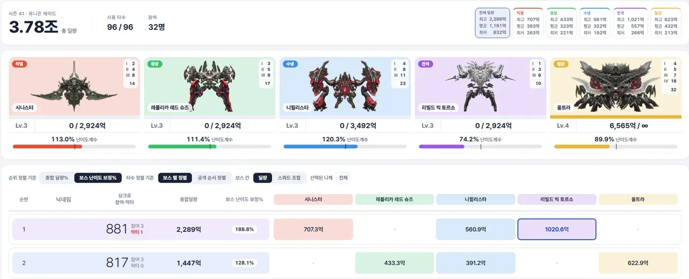
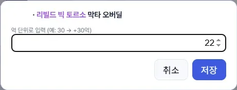
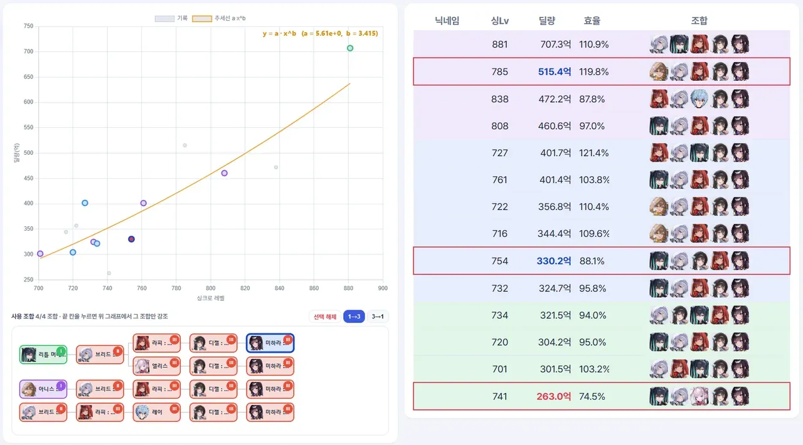
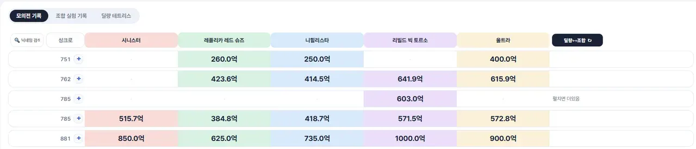
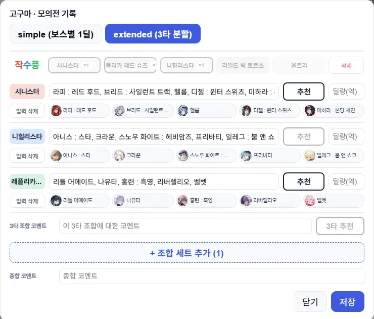
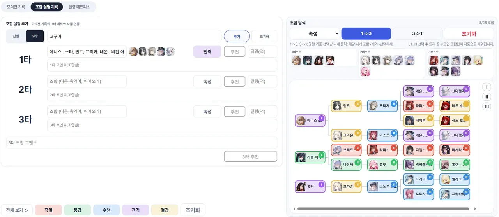
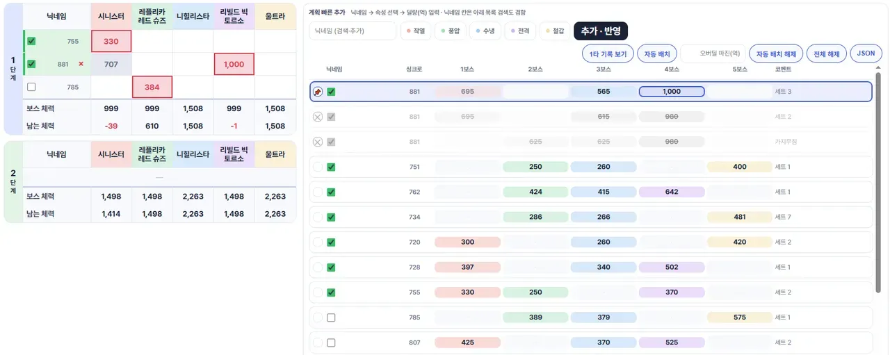
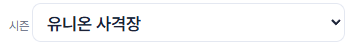
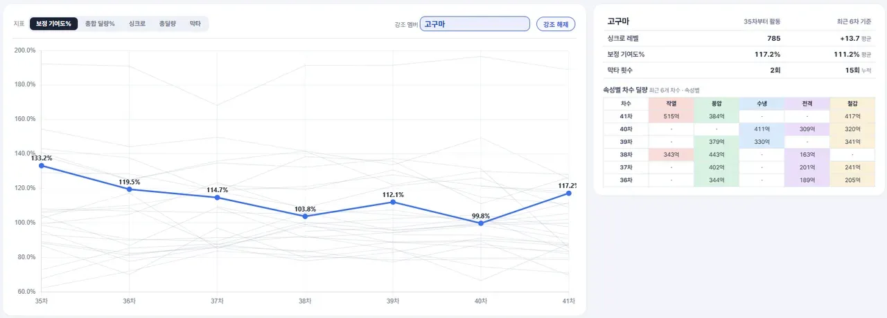

[ 글 읽고 나서 시트 복사, 배포는 여기를 눌러 보세요 (하이퍼 링크) ]
NIKKE · 유니온 레이드
유레 실시간 관제 시트
유니온 레이드 시작 전, 시작 중에 활용할 수 있도록 제작함.
유니온 관리에 필요한 간단한 통계도 제공합니다.
유니온 관리에 필요한 간단한 통계도 제공합니다.
|
풀 관제
모든 모의전 딜량값을 적고 진행
|
부분 관제
일부 모의전 딜량값을 적고 보스 잡기 전 진행
|
테트리스가 필요한 두 경우 모두 적절합니다.
이 시트의 장점
한 번만 세팅하면 더 건들 필요 없음
- 5분마다 자동으로 레이드 진행 정보를 정리·업데이트
- 시즌마다 자동으로 니케 정보, 보스 정보 등 업데이트
딜량 정리 편의 기능
- 1타, 3타 모의전 딜량 기록 + 정리해서 볼 수 있음
- 자동 테트리스 기능으로 모의전 기록을 바탕으로 공격을 최적 배치해 줌
사용한 스쿼드들을 트리형 구조로 읽기 편하게 정리해 줍니다.
SECTION 01
유레 개요
| 유레 개요 — 전체 화면 |
 |
최상단 — 간단 통계
- 총 딜량, 사용 타수, 참여자 수
- 전체 혹은 속성 별 최고, 평균, 최저 딜량 제공
중단 — 보스 정보
- 단계별 사용한 공격횟수 정리
- 진행도 막대바로 표시
- 보스의 난이도를 계수로 계산해 표시
하단 — 레이드 시트
- 총합 딜량 혹은 보스의 난이도에 따라 보정된 값으로 정렬할 지 선택 가능
- 보스별로 나눠 볼 지, 아니면 공격 순서에 따라서 정렬할 지 선택 가능
- 딜량 표기 혹은 스쿼드 표기를 선택 가능
- 스쿼드 표기 시, 니케 이미지를 클릭하면 해당 니케를 사용했는지 보여줍니다.
- 막타 표시, 오버딜 기록 기능
| 레이드 시트 — 오버딜 기록(빨간 칸 → 파란 칸) |
 |
오버딜 기록
· 붉은색 칸을 누르면 오버딜량 기록이 가능합니다.
· 오버딜량을 기록하면 상단 이미지처럼 파란색 칸으로 바뀝니다.
· 자동으로 기록하는 경우 난이도 계수와 총합 딜량 등에 오버딜 기록값을 바로 반영합니다.
· 붉은색 칸을 누르면 오버딜량 기록이 가능합니다.
· 오버딜량을 기록하면 상단 이미지처럼 파란색 칸으로 바뀝니다.
· 자동으로 기록하는 경우 난이도 계수와 총합 딜량 등에 오버딜 기록값을 바로 반영합니다.
보스별 통계
| 보스별 통계 — 산점도 + 조합 트리 |
 |
- 보스 별 통계를 보여줍니다.
- 효율의 경우, 추세선에서 얼마나 떨어져 있는지(딜을 더 잘 넣었는지 못 넣었는지) 나타냅니다.
- 유레 개요에서 보스 버튼을 누르면 진입합니다.
- 다시 해당 보스 버튼을 누르거나 왼쪽의 ← 버튼을 누르면 유레 개요 화면으로 돌아갑니다.
- 아래 트리의 가장 끝 버튼을 누르면 해당 조합을 사용한 스쿼드의 딜량값만 그래프에 나옵니다.
- 마찬가지로 빨간색 칸을 누르면 오버딜량 기록이 가능합니다.
SECTION 02
모의전
치기 전에 굴려보는 기록·조합·테트리스.
모의전 기록
| 모의전 기록 표 |
 |
· +버튼을 눌러서 기록을 추가할 수 있습니다.
| 기록 추가 — 입력 폼(simple / extended) |
 |
- 각 속성별 최대 딜량값을 적을 수 있는 (자동으로 기록되기도 합니다) simple 모드
- 3타 딜량을 적을 수 있는 extended 모드
- 후술할 옵션 쪽에서 미리 조합을 설정하면 추천 버튼이 활성화되며, 누르면 자동으로 조합이 입력됩니다.
조합 실험 기록
| 조합 실험 기록 — 트리 구조 |
 |
- 마찬가지로 단일 공격, 3타 공격 기록을 할 수 있습니다.
- 우측엔 어떤 조합을 사용했는지 트리 구조로 정리해 줍니다.
- 속성 버튼을 누르면 속성별로 보여줍니다.
- 여기서 니케를 누르면 해당 니케가 사용된 조합들만 보여주고, 한 번 더 누르면 해당 니케가 없는 조합들만 보여줍니다.
- Ⅰ, Ⅱ, Ⅲ 버튼을 누르고 트리 끝쪽의 니케를 누르면 그 조합이 우측에 자동으로 입력됩니다.
딜량 테트리스 이 시트의 핵심
| 딜량 테트리스 — 자동 배치 보드 |
 |
이 시트의 핵심과 같은 부분인데 다음 같은 기능이 있습니다.
- 고정 기능 (첫번째 줄 핀): 고정해 두면, 자동 배치 버튼을 눌렀을 때 이 조합을 반드시 포함한 최적 배치 진행.
- 배제 기능 (두번째 줄 X): 해당 조합을 배제하고 (없는 셈 치고) 계산하도록 합니다.
- 참석자 확인 기능 (녹색 칸 V자): 체크해 두면 체크한 사람들의 기록만 가지고 자동 배치합니다.
- 자동배치, 오버딜 마진 (X억 이상의 오버딜을 하도록 배치)
유니온 사격장
| 유니온 사격장 — 시즌 드롭다운 |
 |
상단에 보시면 유니온 사격장 모드가 있습니다.
여기서 딜량 기록들을 해 보시고, 그 다음에 테트리스 연습을 할 수 있습니다.
풀 관제, 부분 관제 둘 중 하나라도 하신다면 연습해 보시는 걸 추천드립니다.
여기서 딜량 기록들을 해 보시고, 그 다음에 테트리스 연습을 할 수 있습니다.
풀 관제, 부분 관제 둘 중 하나라도 하신다면 연습해 보시는 걸 추천드립니다.
SECTION 03
분석
| 분석 화면 |
 |
· 간단한 통계를 보여줍니다. 그냥 직접 써 보십쇼.
OPTIONS
옵션
유니온 멤버 관리
자주 나가거나 들어오는 멤버가 있다면, 기록이 없거나 탈퇴된 상태라고 해도 분석에 포함시켜 둘 수 있습니다.
축약어, 정렬
유니온 내에서 자주 쓰이는 축약어가 있다면 커스터마이징이 가능합니다. 트리형 구조에서 원하는 니케를 왼쪽에 배치시켜 볼 수 있도록 정렬 숫자 기능을 제공합니다.
예 · 라피·각설·헬름의 정렬 숫자가 5, 클디젤의 정렬 숫자가 4, 미하라의 정렬 숫자가 1이면 라디미, 각디미, 헬디미 순서대로 배열됩니다.
사전 추천 조합
여기에 미리 조합을 기록해 두면, 조합 작성 때 추천 버튼을 누르면 여기 있는 조합이 자동으로 입력됩니다.
난이도 계수
자동 계산하도록 하거나, 더 나은 출처가 있다면 수동으로 기입할 수 있습니다.
· 더 나은 통계를 제공하는 글이 있으면 여기 값을 쓰는 게 도움이 되겠죠?
유레 실시간 관제 시트
갤/챈만 모집하는 유니온의 경우 편하게 댓글로 문의 남겨주세요.
그 외의 경우 응답 없을 수 있음. 미리 말씀 드림.
존나 열심히 AI 갈궈서 만들고 고쳤는데, 그럼에도 예외 사항이 있을 수 있으니까.
이런건 고쳐주세요 말하면 바로바로 고치겠습니다.